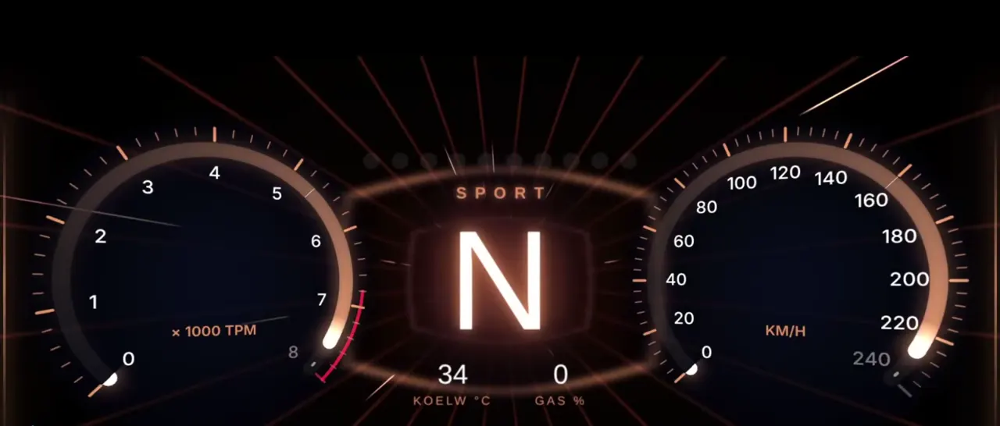

OBD2 · Android en Chrome · gebouwd in Dordrecht
Jouw auto praat. PidLane vertaalt.
Een OBD2-adapter in de poort en je telefoon wordt een instrument: Hyperlane op het dashboard, banden en weer vooruit, een conditiescore die zegt waarom, en je monteur die live meekijkt, waar hij ook is.
Gratis te proberen met een gesimuleerde auto, ook zonder adapter.
01 Hyperlane
Het dashboard dat meerijdt.
De meeste meters staan stil als de auto stilstaat. Hyperlane niet. Een neon-tunnel die meestroomt met je snelheid, ringen die meekantelen met de telefoon, en een kleur die je rijstijl leest. Gemaakt voor wie het wil laten zien aan de passagier.

Opstart
Echt geen render
Op een gewone telefoon, in een gewone auto.
Schermopname van 28 oktober, kwart over één 's nachts. Achtergrond Aurora, in het midden de versnelling in g. Wat je ziet is wat de auto op dat moment meet, op de snelheid waarmee de bus het levert.
Ringen in 3D
Toeren links, snelheid rechts, in perspectief. Ze kantelen mee met de stand van de telefoon.
De rit, samengevat
Bij stilstand: topsnelheid, beste 0–100, hoogste G en verbruik. Na een kwartier zonder meting begint hij opnieuw.
Palet bij je merk
Hyperlane leest het merk van je auto en kiest er een palet en woordmerk bij. Zonder logo's.
Vraagt niets extra
Hyperlane leest de waarden die de app toch al meet. Geen extra vragen aan de auto, dus niets dat de rest vertraagt.
02 Banden × weer
Vooruitkijken in plaats van achteraf meten.
Elke telefoon heeft een weerapp. Wat geen enkele OBD-app zegt: "vrijdagnacht −4 °C, en in jouw sproeiertank zit zomervloeistof." PidLane legt de verwachting naast wat het van je auto weet. Probeer het hieronder.
Het oordeel is relatief.De app kent je voorgeschreven druk niet; die staat op de deurstijl. Wat hij wel kan: de vier banden met elkaar vergelijken. Zo vang je precies de band die leegloopt.
Eerlijk over de bron.OBD ziet geen banden en geen sproeiervloeistof. Elk advies zegt waar het op rust: je profiel, de verwachting of een model.
Geen locatie.Je kiest de dichtstbijzijnde stad uit een lijst. De vraag aan de weerdienst gaat via onze server, zodat je IP-adres er niet aankomt.
Bandenspanning en -temperatuur alleen op auto's die ze via OBD geven, zoals Mazda. De winterkaart werkt op elke auto.
03 Jouw auto
Een score die zegt waarom.
Kenteken in, en PidLane weet wat er rijdt: RDW, APK, tellerstand en terugroepacties. Daarna vergelijkt hij je auto met zichzelf, rit na rit. Geen alarm, maar een score die langzaam zakt als je onderhoud uitstelt, met de reden erbij.
Onderhoud 74 · conditie 88. Gezakt van 86: de remvloeistof is bijna aan de beurt, en stationair loopt hij iets onrustiger dan na de laatste beurt.
Mediaan van de eerste vijf ritten na de beurt tegen de laatste vijf. Te weinig ritten? Dan staat er "nog 3 ritten nodig", nooit een verzonnen getal.
04 Telemetrie
De telefoon meet mee.
Naast wat de auto zegt, meet het toestel zelf: helling, kanteling en G-krachten. Ze staan als eigen sensoren in de lijst, met tegel en grafiek, en de caravan-modus weet er klim van afdaling mee te onderscheiden.
Helling
Uit de oriëntatiesensor, met de telefoon vast in de houder. Een bocht telt niet als kanteling.
G-spoor
Remmen, optrekken en bochten als één spoor. In Hyperlane loopt het over de vloer van de tunnel.
Nooit de bus op
Telemetrie komt van de telefoon en wordt nooit aan de auto gevraagd. Heeft jouw toestel de sensor niet, dan staat hij er ook niet.
05 Expert op afstand
Jij bij de auto. Je monteur op zijn eigen scherm.
Tik op Laat iemand meekijken en deel de code, QR of link. De ander ziet live dezelfde meters, vraagt zelf de foutcodes op en kiest welke sensoren hij volgt. Hij heeft geen adapter nodig. Voor de storing die alleen onderweg optreedt, of de occasion die je samen beoordeelt.
beveiligd
Alleen lezen.Op afstand verandert niemand iets aan de auto. Foutcodes wissen kan alleen bij de auto zelf, en alleen bewust.
Twee niveaus.Een kennis kijkt mee voor één sessie. Je verkoper of garage kan vaste expert worden voor je auto.
Elk toestel.De expert heeft alleen een browser nodig. Ook op een iPhone of een laptop in de werkplaats.
06 Volledig onderzoek
Geen lijst met codes. Een monteur die doorvraagt.
Een foutcode zegt waar het pijn doet, niet waarom. PidLane werkt zoals een goede monteur: kijken, een vermoeden, gericht meten, en pas stoppen als er iets gevonden is.
- 01
Je vertelt wat er speelt
Een lampje, gedrag, een geluid. Of gewoon: "er is iets mis".
- 02
Hij leest uit en kijkt waar het afwijkt
Foutcodes, freeze frame, readiness en de sensoren die er voor jouw auto toe doen. Gelegd naast de referentie voor koud of warm, stationair of rijdend.
- 03
Hij meet gericht
Kort, en met uitleg waarom.
"Houd 2000 toeren vast. Ik kijk of de trim terugzakt."
- 04
Conclusie, met bewijs
De waarschijnlijke oorzaak, waarom, de volgende stap en wat is uitgesloten. Het rapport komt als PDF bij je voertuig.
07 Wat het verder kan
Van "mag ik doorrijden?" tot een complete inkoopcontrole.
Welk lampje brandt er?
Kies het lampje of maak een foto van je dashboard. Je hoort meteen of je door kunt rijden.
Kenteken-check
APK, WAM-verzekering, tellerstand, terugroepacties, import en eigenaar.
Aankooprapport
Bekende zwakke plekken per merk, een proefritlijst en een oordeel uit vaste regels. Onvolledig is nooit groen.
Rit-monitor en Waakronde
Let tijdens het rijden op afwijkingen en nieuwe foutcodes, met freeze frame op het moment zelf.
PID-recorder
Kies sensoren, rijd, reproduceer je probleem. De opname gaat mee in de analyse.
Caravan-modus
Trekgewicht en vermogen de hele rit, klim en afdaling, coaching onderweg en een eindrapport.
Readiness en ECU-tests
Klaar voor de keuring? Plus de on-board testresultaten van katalysator en lambda.
APK, onderhoud, terugroep
Een seintje 30 en 7 dagen vooraf, en zodra er een terugroepactie is voor jouw auto.
Alleen wat jouw auto heeft
Geen nep-AdBlue op een benzineauto. Elke sensor wordt getoetst op bestaan en plausibiliteit.
Voor wie
Ik koop een auto, of heb er een.
Snap wat de motor zegt, zie of er net foutcodes zijn gewist, en laat je eigen monteur meekijken terwijl jij bij de verkoper staat.
Voor particulieren → garage & autobedrijfIk koop in, repareer of verkoop.
Inkoopcontrole in vier minuten, een rapport voor het dossier, en een werkplaats die meekijkt als de inkoper op locatie staat.
Voor autobedrijven →Zo begin je
Drie stappen. Vandaag nog.
Installeer de app
Via Google Play, of open app.pidlane.nl in Chrome. Geen adapter? Kies Simuleer verbinding.
Adapter in de poort
Een OBD2-adapter met Bluetooth Classic (ELM327 of STN). De poort zit meestal onder het stuur. Contact aan, koppelen, klaar.
Rijden of laten zoeken
Zet Hyperlane aan, laat PidLane zoeken naar de oorzaak, of tik op Laat iemand meekijken.
Vragen
Goede vragen.
Welke adapter heb ik nodig?
Een OBD2-adapter met Bluetooth Classic (ELM327 of STN, bijvoorbeeld OBDLink MX+ of Vgate vLinker MC+). Adapters die alleen Bluetooth Low Energy kennen werken niet. Aan een laptop kan het ook via USB, in Chrome.
Werkt het met mijn auto?
Vrijwel elke benzineauto vanaf 2001 en diesel vanaf 2004 in Europa heeft een OBD2-poort. Welke sensoren je te zien krijgt verschilt per auto; PidLane laat alleen zien wat jouw auto echt levert.
Ziet Hyperlane er op elke telefoon zo uit?
Op elke Android-telefoon met WebGL, en dat zijn ze vrijwel allemaal. Zonder WebGL krijg je een rustiger verloop in dezelfde kleuren. Wie in de instellingen van de telefoon minder beweging kiest, krijgt een stilstaand beeld.
Leest hij de bandenspanning van elke auto?
Nee. Alleen van auto's die die via OBD doorgeven, zoals Mazda. De winterkaart met banden- en sproeieradvies werkt op elke auto, want die rust op je profiel en de verwachting.
Heeft de expert die meekijkt een adapter nodig?
Nee. Alleen wie bij de auto staat heeft een adapter. De expert opent PidLane, tikt op Ik ben de expert en typt de code, of opent de link. Hij kan meekijken en foutcodes opvragen, maar niets aan de auto veranderen.
Werkt het op een iPhone?
Het uitlezen van de auto nog niet: daarvoor is een Android-telefoon nodig, met de app of met Chrome. Meekijken op afstand, de kenteken-check en foutcodes opzoeken werken op elk toestel met een browser.
Wat kost het?
De app is gratis te downloaden en je kunt alles uitproberen met een gesimuleerde auto. Voor AI-analyses gebruik je tegoed; bij registratie krijg je een paar analyses gratis.
Kan ik iets kapot maken?
Nee. Uitlezen verandert niets aan de auto. Foutcodes wissen kan alleen bewust en alleen bij de auto zelf, nooit op afstand.

Je auto praat al. Nu versta je hem ook.
Download PidLane gratis en probeer het meteen, met of zonder adapter.